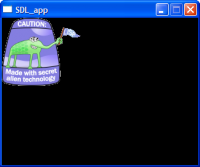

Abstract
LISPBUILDER-SDL-IMAGE provides a Lisp wrapper for the SDL_Image library. LISPBUILDER-SDL-IMAGE has a dependency on the LISPBUILDER-SDL package. LISPBUILDER-SDL-IMAGE is distributed under the MIT-style license.
LISPBUILDER-SDL-IMAGE supports the following image formats: TGA, BMP, PNM, PBM, PGM, PPM, XPM, XCF, PCX , GIF, JPG, TIF, LBM and PNG.
Current Version: The current version of LISPBUILDER-SDL-IMAGE is version 0.2.
LISPBUILDER-SDL-IMAGE supports the following image formats: TGA, BMP, PNM, PBM, PGM, PPM, XPM, XCF, PCX , GIF, JPG, TIF, LBM and PNG.
LISPBUILDER-SDL-IMAGE will attempt to automatically load an image by using the Magic Number in the image file. For image formats that have no magic number such as targa (.TGA), the LISPBUILDER-SDL-IMAGE API allows the image type to be specified as a parameter.
Functions and symbols exported from the LISPBUILDER-SDL-IMAGE package are
accessible from the LISPBUILDER-SDL-IMAGE: prefix or the
shorter form SDL-IMAGE: nickname.
Note that additional libraries are required to load JPG, PNG and TIFF images:
This example was created with the following code:

(sdl:with-init ()
(sdl:window 320 240)
(sdl:draw-surface (sdl-image:load-image "lisp.tga" :image-type :TGA :force t))
(sdl:with-events ()
(:quit-event () t)
(:video-expose-event (sdl:update-display))))
The following table describes the status of the Lisp implementations that have been tested with LISPBUILDER-SDL-IMAGE:
| Lisp Implementation | LISPBUILDER-SDL-IMAGE Status | Comments | ||
|---|---|---|---|---|
| Win32 | Linux | MacOS | ||
| CLISP v2.38 | Working | Working | No | |
| Lispworks v4.4.6 Personal | Working | Working | No | |
| Allegro Express 8.0 | Unknown | Unknown | No | |
| OpenMCL | NA | NA | Unknown | |
| SBCL | Working | Working | No | |
svn co https://lispbuilder.svn.sourceforge.net/svnroot/lispbuilder lispbuilder
See the LISPBUILDER documentation for installation instructions.
See the LISPBUILDER documentation for Usage instructions.
Enter the following at the REPL to load the examples in the LISPBUILDER-SDL-IMAGE-EXAMPLES package:
(asdf:operate 'asdf:load-op :lispbuilder-sdl-image-examples)
The following examples are contained in the package LISPBUILDER-SDL-IMAGE-EXAMPLES:
LISPBUILDER-SDL-IMAGE has a dependency on LISPBUILDER-SDL.
LISPBUILDER-SDL-IMAGE is distributed under the MIT-style license.
[Generic function]
image-p source image-type => result
Returns
Tif the sourceSOURCEcontains an image of typeIMAGE-TYPE. ReturnsNILotherwise. Attempts to detect the image type using the magic number contained in the image if one is available.NILis always returned for images of typeTGAas aTGAimage does not contain a magic number.Example
(RWOPS-P SOURCE :IMAGE-TYPE :BMP)
[Method]
image-p (source string) image-type => result
Returns
Tif the image in the file at locationSOURCEis of typeIMAGE-TYPE.Parameters
SOURCEis the filename and path of the file on the drive of typeSTRING.IMAGE-TYPEcan be one of:BMP,:GIF,:JPG,:LBM,:PCX,:PNG,:PNM,:TIF,:XCF,:XPMor:XV.Examples
(IMAGE-P "image.bmp" :IMAGE-TYPE :BMP)
[Method]
image-p (source rwops) image-type => result
Returns
Twhen the type of image contained in theSDL:RWOPSin the sourceSOURCEis of the typeIMAGE-TYPE.Parameters
SOURCEis of typeSDL:RWOPS.IMAGE-TYPEmust be one of:BMP,:GIF,:JPG,:LBM,:PCX,:PNG,:PNM,:TIF,:XCF,:XPMor:XV.
[Generic function]
image-type-of source => result
Returns the type of image in source
SOURCE. Attempts to detect the image type using the magic number contained in the image if one is available.Returns
- Returns the image type of
SOURCEwhich may be one of:BMP,:GIF,:JPG,:LBM,:PCX,:PNG,:PNM,:TIF,:XCF,:XPMor:XV, if the image type can be determined. ReturnsNILif the image cannot be determined (The magic number is not supported or the magic number is not found).NILis always returned for images of typeTGAas aTGAimage does not contain a magic number.
[Method]
image-type-of (source string) => result
Returns the type of image in the file at location
SOURCE.Parameters
SOURCEis the filename and path of the file on the drive of typeSTRING.Example
(IMAGE-TYPE-OF "image.bmp")
[Method]
image-type-of (source rwops) => result
Returns the type of image contained in the
SDL:RWOPSin the sourceSOURCE.Parameters
SOURCEis of typeSDL:RWOPS.Example
(IMAGE-TYPE-OF SOURCE)
[Function]
load-and-convert-image source &rest named-pairs &key image-type force &allow-other-keys => result
Loads an image from the filename
SOURCEas per LOAD-IMAGE-*, converts this image to the current display format usingSDL:CONVERT-SURFACE.Parameters supported are the same as those for LOAD-IMAGE and
SDL:CONVERT-IMAGE.
[Generic function]
load-image source &key image-type force free => result
Creates and returns a new surface from the source
SOURCE.Unless
:FORCE T, the magic number will be used to determine the image type contained in theSDL:RWOPSinSOURCE. To load an image when the magic number is unavailable (image formats such asTGAdo not contain a magic number), specify the image type using theKEYwordIMAGE-TYPE. If the *magic number* is available and does not matchIMAGE-TYPE, thenIMAGE-TYPEis ignored. To load an image asIMAGE-TYPEwhen the *magic number* is available (effectively ignoring the *magic number*), specify:FORCE T. It is probably best to avoid using:FORCE T` unless you know what you are doing.Returns
- Returns a new
SDL:SURFACE, orNILifSOURCEdoes not contain a valid image or the image type cannot be determined. All non-magicable image formats, such asTGA, must be specified usingiMAGE-TYPE. To load a TGA image, for example, use:IMAGE-TYPE :TGAExample
- To load a
(CREATE-IMAGE-FROM-RWOPS SOURCE)BMPimage using the magic number- To load a
(CREATE-IMAGE-FROM-RWOPS SOURCE :IMAGE-TYPE :TGA)TGAimage- To load a
(CREATE-IMAGE-FROM-RWOPS SOURCE :IMAGE-TYPE :TGA :FORCE T)BMPimage asTGA
[Method]
load-image (source string) &key image-type force free => result
Creates and returns a new surface from the image in the file at the location
SOURCE.Parameters
SOURCEis the filename and path of the file on the drive of typeSTRING.IMAGE-TYPEwhen specified type may be one ofNIL,:BMP,:GIF,:JPG,:LBM,:PCX,:PNG,:PNM,:TGA,:TIF,:XCF,:XPMor:XV.FORCEwhenTwill force an image to be loaded asIMAGE-TYPE, ignoring any magic number when present inSOURCE.FREEis only used whenSOURCEisSDL:RWOPS.Example
- To load a
(LOAD-IMAGE "image.bmp") (LOAD-IMAGE "image.tga" :IMAGE-TYPE :TGA) (LOAD-IMAGE "image.bmp" :IMAGE-TYPE :BMP :FORCE T)BMPimage using the magic number
[Method]
load-image (source rwops) &key image-type force free => result
Creates and returns a new surface from the image contained in the
SDL:RWOPSstructure in the sourceSOURCE.Parameters
SOURCEis of typeSDL:RWOPS.IMAGE-TYPEwhen specified type may be one ofNIL,:BMP,:GIF,:JPG,:LBM,:PCX,:PNG,:PNM,:TGA,:TIF,:XCF,:XPMor:XV.FORCEwhenTwill force an image to be loaded asIMAGE-TYPE, ignoring any magic number when present inSOURCE.FREEwhenTwill automatically free theSDL:RWOPSinSOURCE.